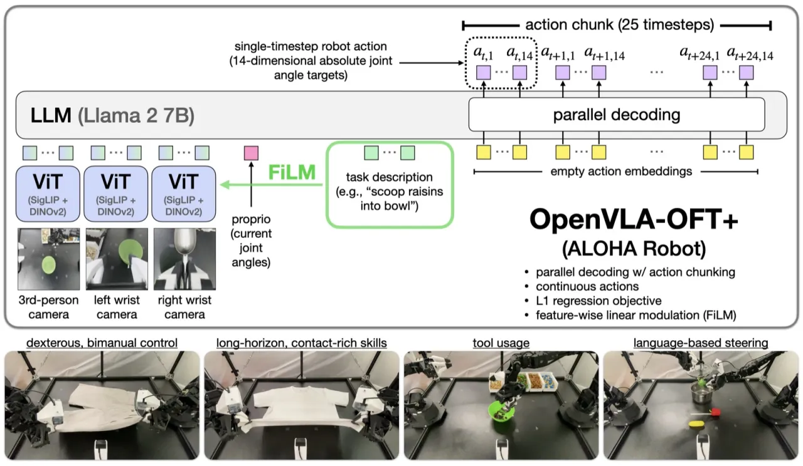
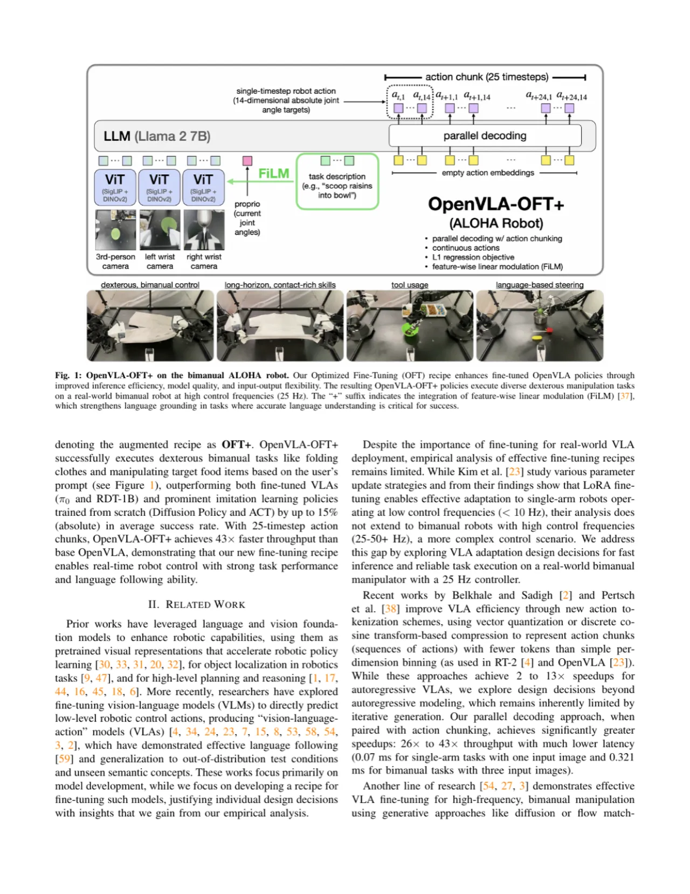
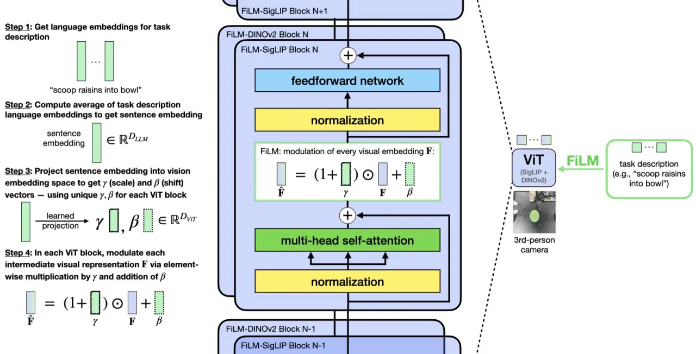
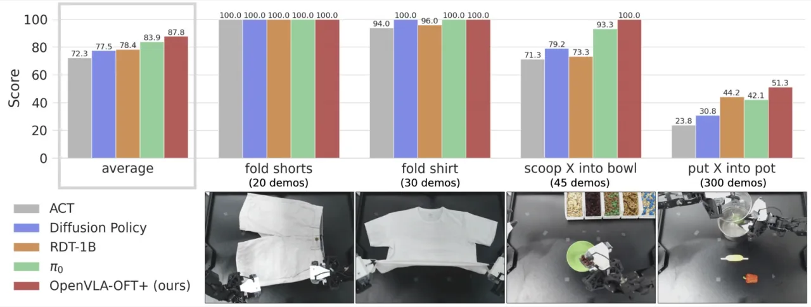
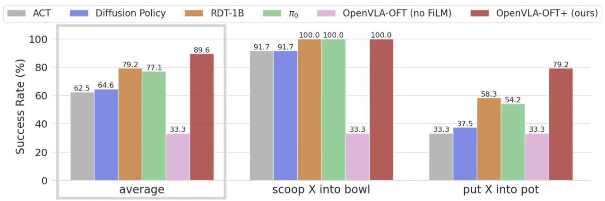

本文系统研究如何将视觉-语言-动作模型（VLA）高效迁移至新型机器人场景。作者提出 Optimized Fine-Tuning (OFT) 配方，将并行解码、动作分块、连续动作表示与 L1 回归四项关键改进融为一体，使 OpenVLA-OFT 在 LIBERO 仿真基准上达到 97.1% 平均成功率（相较于基线 OpenVLA 的 76.5%），推理吞吐量提升 26×，并在双臂 ALOHA 实体机器人上超越 π₀、RDT-1B 等强基线达 15%（absolute）。
VLA 模型（如 OpenVLA）将大规模视觉-语言预训练引入机器人操作，但直接迁移到新场景时面临两大瓶颈：推理速度太慢（自回归逐 token 解码）和成功率不足（离散动作表示精度受限）。已有工作倾向于重新设计预训练，而本文聚焦微调阶段，寻找一套通用、高效的系统性配方。
"We investigate optimized fine-tuning (OFT) — a recipe for adapting VLAs to novel robot setups, integrating parallel decoding, action chunking, continuous action representations, and L1 regression."

OFT 配方由四个相互协同的改进组成：以并行解码（parallel decoding）替代自回归逐步生成，以动作分块（action chunking）同时预测多步动作，以连续动作表示（continuous action representation）取代 256-bin 离散 tokenization，并采用 L1 回归作为训练目标。针对多视角真实机器人场景，还引入 FiLM 语言调制增强语言接地能力。

标准自回归 VLA 逐 token 顺序生成动作，每步推理都要等待前一步完成。并行解码将语言模型最后的 causal attention 替换为双向 attention，以空的动作嵌入作为输入，在单次前向传播中同时预测所有动作 token，消除自回归的串行依赖。动作分块则进一步将每次生成的动作步数扩展到 K 步（仿真 K=8，真实机器人 K=25），既减少调用次数，又通过时序建模提升任务成功率。两者结合带来约 4× 延迟下降和 14%（absolute）成功率提升。
原始 OpenVLA 将连续动作离散化为 256 个 bin，以 next-token prediction 方式训练，精度受量化误差限制。本文改用一个轻量 MLP action head 直接输出连续动作值，并以 L1 regression（mean absolute error） 为目标函数。L1 相比扩散目标收敛更快、推理无需迭代采样，同时保持与 Diffusion Policy 相当的任务质量。消融实验显示，Continuous + L1 与 Continuous + Diffusion 性能相近（95.3% vs. 95.4%），但推理更快。
在 LIBERO 仿真中，无 FiLM 也能实现良好的语言接地；但在 ALOHA 双臂机器人（多视角摄像头 + 更复杂任务）上，不加 FiLM 语言接地能力明显下降。Feature-wise Linear Modulation (FiLM) 将语言嵌入通过学习的仿射变换（scaling + shift）注入 Vision Transformer 各层，调制视觉特征，使模型能更有效区分"折叠短裤"与"折叠长袖衬衫"等语义差异任务。

实验分为两部分：LIBERO 仿真基准（Franka Panda，4 个任务套件，每套件 500 条专家演示）与ALOHA 真实双臂机器人（ViperX，25 Hz 控制，14 维关节状态，三视角摄像头，4 个灵巧操作任务）。对比方法包括 Diffusion Policy、ACT（从头训练）、Octo、DiT Policy、MDT、Seer（替代方法）以及 RDT-1B、π₀（微调 VLA）。
| 方法 | Spatial | Object | Goal | Long | Average |
|---|---|---|---|---|---|
| Diffusion Policy | 78.3% | 92.5% | 68.3% | 50.5% | 72.4% |
| Octo | 78.9% | 85.7% | 84.6% | 51.1% | 75.1% |
| DiT Policy | 84.2% | 96.3% | 85.4% | 63.8% | 82.4% |
| OpenVLA（基线） | 84.7% | 88.4% | 79.2% | 53.7% | 76.5% |
| OpenVLA + PD&AC | 91.3% | 92.7% | 90.5% | 86.5% | 90.2% |
| π₀（最高输入配置） | 96.8% | 98.8% | 95.8% | 85.2% | 94.2% |
| OpenVLA-OFT（最高输入配置） | 97.6% | 98.4% | 97.9% | 94.5% | 97.1% |
| 方法 | Throughput (Hz) | Latency (sec) |
|---|---|---|
| OpenVLA（基线） | 4.2 | 0.2396 |
| + Parallel Decoding & Chunking | 108.8 | 0.0735 |
| OpenVLA-OFT（含所有输入） | 71.4 | 0.1120 |

| 方法 | Throughput (Hz) | Latency (sec) |
|---|---|---|
| OpenVLA（基线） | 1.8 | 0.543 |
| OpenVLA-OFT+ | 77.9 | 0.321 |
| RDT-1B | 84.1 | 0.297 |
| π₀ | 291.6 | 0.086 |

L1 回归假设对给定观测存在单一最优动作。当任务存在真正的多模态动作分布（同一输入对应多种有效行为）时，L1 回归可能退化为对多个峰值取平均，导致动作质量下降。作者指出这一限制，并建议在多模态场景中考虑扩散类目标。
本工作专注于研究如何将现有 VLA 模型（OpenVLA）高效适配到新场景，未涉及预训练阶段的优化。OFT 配方能否直接用于大规模预训练、或对其他 VLA 架构（如 π₀）同样有效，目前尚不明确。
实验发现 FiLM 在 LIBERO 仿真中作用有限，但在 ALOHA 真实机器人上不可或缺。作者坦承目前无法完全解释这一差异，推测可能与 ALOHA 任务中双臂操作预训练数据的分布偏移有关，但尚未定量验证。